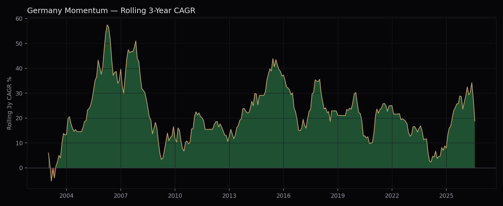

One-at-a-time sweeps across momentum lookback, market cap filter, regime window, portfolio size and fundamental filter, plus calendar-year returns and rolling 3-year performance, behind the Germany XETRA momentum strategy. 2000–2026.
Every table below shares one baseline unless noted otherwise: 12-month momentum (no skip), mcap ≥ 30th percentile (top 70% by size), 226 US-ISIN ADRs excluded, DAX vs its own 200-day moving average, top 20 equal weighted, monthly rebalance, 40bps round-trip costs — CAGR +20.4%, Sharpe 0.945, Sortino 1.81, MaxDD −28.2%, matching the strategy report exactly.
| Config | Sharpe | Sortino | CAGR | MaxDD |
|---|---|---|---|---|
| 9M skip0, mcap top60% | 0.89 | 1.67 | +25.9% | −47.7% |
| 6M skip0, mcap top60% | 0.75 | 1.52 | +24.2% | −56.1% |
| 6M skip0, mcap top70% | 0.74 | 1.53 | +24.8% | −55.8% |
| 9M skip1, mcap top60% | 0.75 | 1.26 | +20.5% | −53.5% |
| 12M skip0, mcap top60% | 0.72 | 1.22 | +20.4% | −56.1% |
| 6M skip1, mcap top60% | 0.70 | 1.36 | +22.2% | −55.5% |
No regime protection here (deliberately, this phase isolates momentum/mcap alone) — MaxDD is brutal across the board (−48% to −56%), same pattern seen in every market audited this session before its regime filter is added. Shorter lookbacks (6–9M) edge out 12M at this unprotected stage; the joint grid (Section VI) later found 12M wins once regime, N and mcap are optimized together — a reminder that Phase 1 rankings alone aren't the final word.
| MA window | Sharpe | Sortino | CAGR | MaxDD |
|---|---|---|---|---|
| MA50 | 0.66 | 1.37 | +17.7% | −32.3% |
| MA75 | 0.74 | 1.57 | +19.3% | −37.3% |
| MA100 | 0.79 | 1.68 | +20.8% | −44.9% |
| MA150 | 0.79 | 1.71 | +20.3% | −28.8% |
| MA200 (final) | 0.84 | 1.76 | +21.9% | −29.2% |
Opposite pattern to Canada and Taiwan (both MA75): Germany's Sharpe rises roughly monotonically with window length, longest tested wins. Not a knife-edge peak with a cliff either side — MA150 and MA200 sit close together on both Sharpe and MaxDD, which is more consistent with a genuine slow-regime market than a single lucky window.
| N | Sharpe | Sortino | CAGR | MaxDD |
|---|---|---|---|---|
| 10 | 0.75 | 1.41 | +20.5% | −30.7% |
| 12 | 0.81 | 1.55 | +20.8% | −28.8% |
| 15 | 0.84 | 1.64 | +20.4% | −29.4% |
| 20 (final) | 0.94 | 1.81 | +20.4% | −28.2% |
Unlike Canada (where N=10 traded Sharpe for CAGR against N=15), here N=20 dominates on every metric simultaneously among the values tested — higher Sharpe, higher Sortino, essentially flat CAGR, and the best MaxDD. No real trade-off in this range; larger N wasn't tested beyond 20 in the joint grid.
| Filter | Sharpe | Sortino | CAGR | MaxDD |
|---|---|---|---|---|
| None (final, N=20) | 0.94 | 1.81 | +20.4% | −28.2% |
| GrossProfit(TTM)>0 | 0.79 | 1.45 | +16.1% | −28.8% |
| NetIncome(TTM)>0 | 0.74 | 1.27 | +14.1% | −22.4% |
| EBIT(TTM)>0 | 0.72 | 1.27 | +13.6% | −19.4% |
| ROE>0 | 0.68 | 1.19 | +13.5% | −22.4% |
All four fundamental filters reduce Sharpe at N=15 (this table's setting) — but the joint grid found N=20 changes that story for EBIT>0 specifically (Sharpe 0.72→0.90 moving from N=15 to N=20 with EBIT>0 applied, MaxDD improving to −18.0% — see the strategy report, Section VII). This table alone would wrongly suggest fundamentals never help here; they can, just not at the N this table fixes. Ranking-by-Sharpe order is otherwise consistent: GrossProfit > NetIncome > EBIT > ROE, mirroring Taiwan's finding that top-line filters cut less than bottom-line ones in a capex-heavy, cyclical index.
A reduced joint grid (5 lookback/skip × 3 mcap × 2 MA × 4 N × 2 filter = 240 combinations) was run to check whether the sequential, one-parameter-at-a-time results above hold up once parameters are varied together. They didn't fully: the sequential search (fixing N=15 before testing filters) never saw the EBIT>0/N=20 combination, which turned out to be a materially better risk-adjusted config than anything the sequential path found on its own. Full detail and both final candidates are in the strategy report, Sections V–VII.
*2026 is a partial year (through July). 21 of 27 years positive (78%); the two clearest negative years, 2008 (−13.0%) and 2011 (−13.5%), are both real drawdowns the MA200 regime filter didn't fully avoid — it reduces exposure, it doesn't eliminate down years.

Only one 3-year window in the entire 26-year history shows a negative rolling CAGR: the window ending February 2003, catching the tail of the dot-com bust before the regime filter and the subsequent 2003–2006 recovery took over. Every other rolling 3-year period, including windows that swallow 2008 and 2011, stayed positive — the regime filter and monthly rebalance recovering faster than a 3-year holding period could stay underwater.